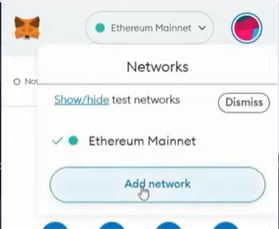

MetaMask is a popular cryptocurrency wallet and browser extension that enables users to interact with decentralized applications (dApps) on the EVM blockchains. It acts as a bridge between a user's web browser and an EVM blockchain, allowing them to manage their accounts, store and transfer ERC-20 tokens, and interact with smart contracts.
Here are some key features and functionalities of MetaMask:
Wallet Management: MetaMask allows users to create and manage multiple Ethereum accounts within their wallets. Each account has a unique address and associated private keys, which are securely stored locally on the user's device.
Browser Extension: MetaMask is available as a browser extension for popular web browsers like Chrome, Firefox, and Brave. Users can install the extension to easily access their accounts and interact with dApps directly from their browsers.
Secure Account Access: To ensure the security of user accounts, MetaMask requires users to enter their account password or use biometric authentication (if supported by the device) to access their accounts.
Interaction with dApps: MetaMask integrates with websites and dApps that are built on the Ethereum blockchain. It provides a user-friendly interface for users to connect their accounts, sign transactions, and interact with smart contracts seamlessly.
Token Management: MetaMask supports various ERC-20 tokens, allowing users to view and manage their token balances within the wallet. It also facilitates token transfers and token approvals required for interacting with different decentralized applications.
Network Customization: MetaMask allows users to switch between different EVM-based networks, including the mainnet, testnets (like Ropsten, Kovan, and Rinkeby), and custom networks. This flexibility enables users to interact with dApps across different EVM-based networks.
MetaMask has gained significant popularity within the blockchain ecosystem due to its user-friendly interface, seamless dApp integration, and wide adoption by developers and users alike. It serves as a crucial tool for accessing and interacting with the blockchain and its associated decentralized applications.
To install MetaMask, follow these steps:
- Open your preferred web browser (Chrome, Firefox, or Brave) and visit the MetaMask website at https://metamask.io/.
On the MetaMask website, click on the "Get Chrome Extension" (or "Get Firefox Extension" or "Get Brave Extension") button, depending on the browser you are using.
You will be redirected to the browser's extension store. Click on the "Add to Chrome" (or "Add to Firefox" or "Add to Brave") button to start the installation process.
A pop-up window will appear, asking for confirmation to add the extension. Click "Add extension" to proceed.
Once the extension is added, you will see the MetaMask icon in your browser's toolbar (usually located at the top right corner). Click on the MetaMask icon to launch the extension.
The first time you launch MetaMask, you will be presented with the Terms of Service. Read through the terms, and if you agree, click "Accept" to continue.
Next, you will be prompted to create a new MetaMask wallet or import an existing one. Follow the on-screen instructions to set up your wallet. This includes creating a strong password and securely storing your seed phrase.
After setting up your wallet, you will have access to your EVM accounts and can start using MetaMask to interact with dApps, manage tokens, and perform EVM transactions.
Remember to keep your MetaMask password and seed phrase secure. The seed phrase is crucial for wallet recovery and should be stored offline in a safe place.
Note: The installation steps may vary slightly depending on the browser you are using. Make sure to follow the specific instructions for your browser.
To use metamask with one of the Golden Gate networks, you will need to add the respective network into the metamask. You can do that using our video instruction https://youtu.be/0RSAoHbn6C8 or follow the steps:
In the MetaMask interface, click on the account avatar at the top right corner and select "Settings" from the dropdown menu.
In the Settings menu, select the "Networks" tab. (Net)
Scroll down to the "Networks" section and click on the "Add Network" button. 
Choose "Add a network manually". 
A form will appear where you can enter the details of the custom network. 
Network Name: Provide a name for the Golden Gate network. New RPC URL: Enter the URL of the custom network's RPC (Remote Procedure Call) endpoint. https://testnode.ggxchain.io for the Golden Gate testnet Chain ID: Input the Chain ID associated with the custom network. 8866 for the Golden Gate testnet
Once you have filled in the required details, click the "Save" button to add the custom network to MetaMask.
The custom network will now be available in the MetaMask interface. You can switch between networks by clicking on the network dropdown at the top of the MetaMask interface and selecting the desired network.